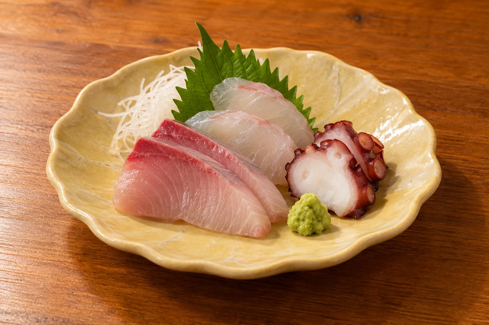
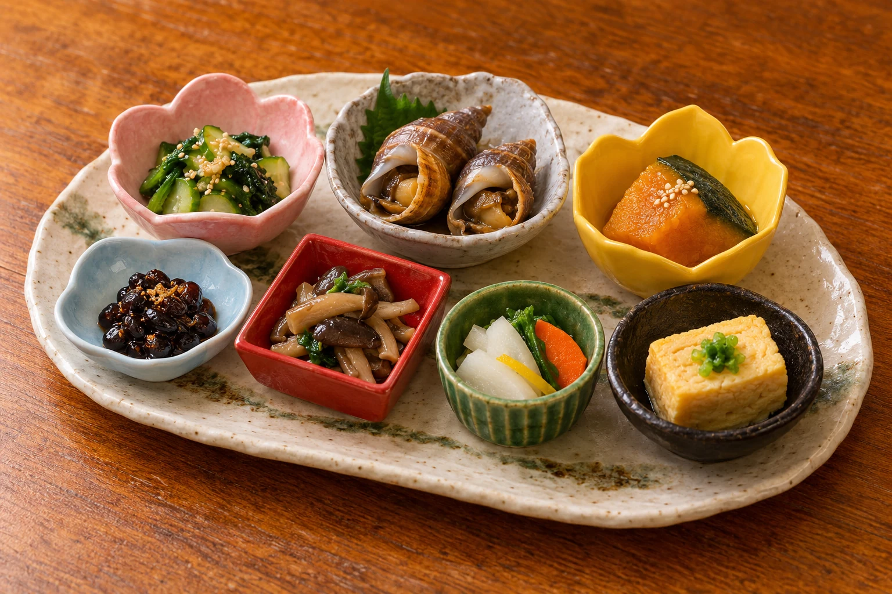
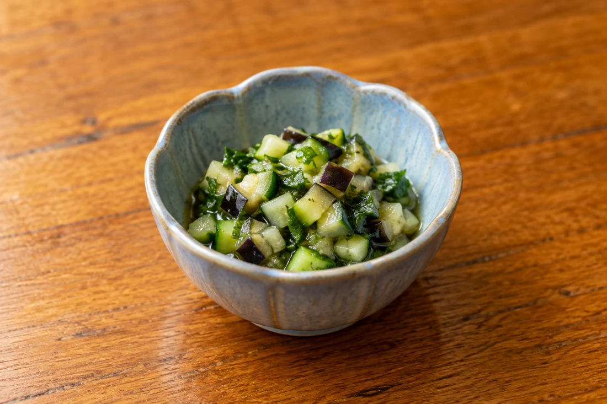
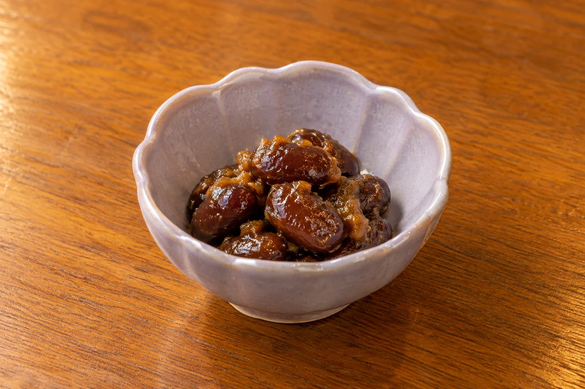
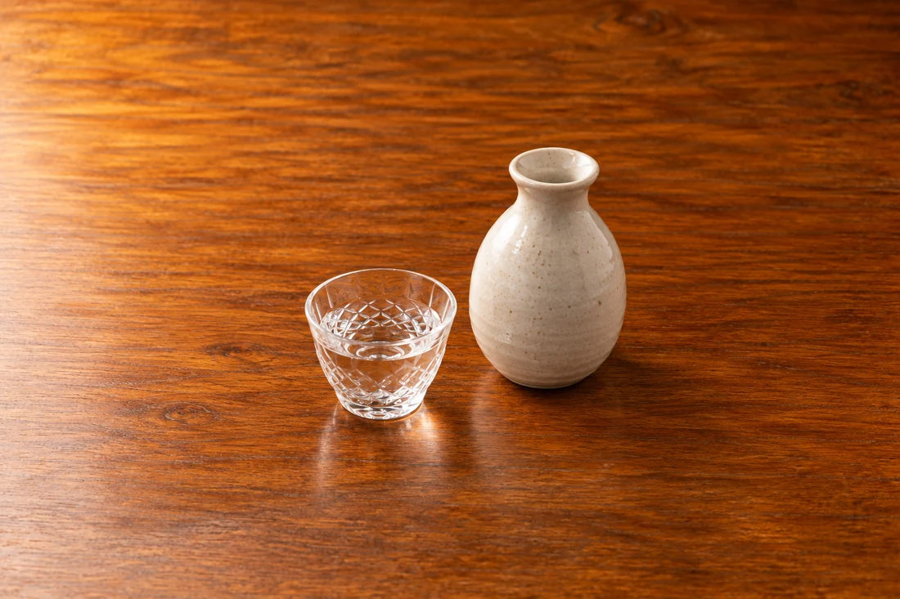
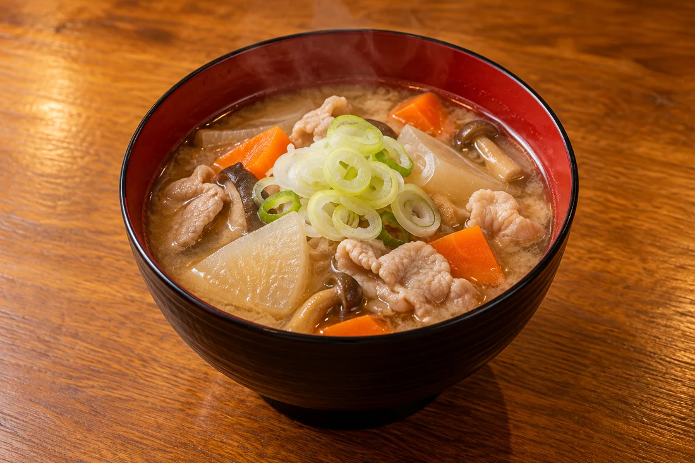

旬のお刺身
ひと口目に、
魚のおいしさを。
その日の魚を、お刺身で。
みずみずしい味わいとともに、
ゆっくり夜の食事が進みます。

一 お料理
少しずつ違う味に出会える、小鉢の盛り合わせ。
お刺身や焼き物、味の染みた煮物。
旬を楽しむおまかせが、会話の時間を彩ります。
二 小鉢の楽しみ
華やかなひと皿の中に、素朴な山形の味。
野菜や豆の小鉢にも、それぞれの楽しみがあります。

山形の「だし」のように、
野菜の食感を楽しむ、さっぱりしたひと口も。

豆の小鉢など、気取らない味わい。
少しずつつまむ楽しさが、お酒の時間に寄り添います。
小鉢の内容も季節によって変わります。その日の料理との出会いをお楽しみください。
三 地酒の時間
旬の料理を味わいながら、地酒をゆっくり。
お好みの飲み口をお聞かせください。
料理とお酒が寄り添う、
そんな夜のひとときを、川なりで。
銘柄・提供内容は、その日のご案内をご確認ください。


四 食事の余韻
具だくさんの豚汁のような、
ほっとする汁物がうれしいひととき。
小鉢から始まった夜を、
あたたかな味わいとともに。
汁物の内容は季節・仕入れによって変わります。
五 ご予約・ご相談
ご希望の日にち・人数をお伝えください。
お料理やご予算、お飲み物についても、
ご予約時にご確認いただけます。
営業日・空席についても、お電話でご確認ください。
食物アレルギーや召し上がれない食材がある場合は、ご予約の際にお知らせください。対応の可否はお電話でご確認ください。
ご来店前にお電話で空席をご確認ください。ご希望の日時・人数を伺い、ご案内いたします。
おまかせのお料理は、季節・仕入れによって内容が変わります。料金、お飲み物の内容・条件と合わせて、ご予約時にお電話でお問い合わせください。
ご希望の人数・日時をお伝えください。席のご案内や利用条件については、お電話でご相談ください。
営業時間は17:00〜22:30。日曜・祝日ほかお休みがございます。曜日ごとの営業や臨時休業は、お出かけ前にお電話でご確認ください。
駐車場所・利用条件は、ご予約の際に店舗へお問い合わせください。
六 店舗案内
山形駅から徒歩圏内。
旅の夜にも、親しい人との食事にも。
営業日・営業時間は変更になる場合があります。
ご来店前のご確認をお願いいたします。
地図から、現在地からの経路をご確認いただけます。
ひと皿と、一杯と。